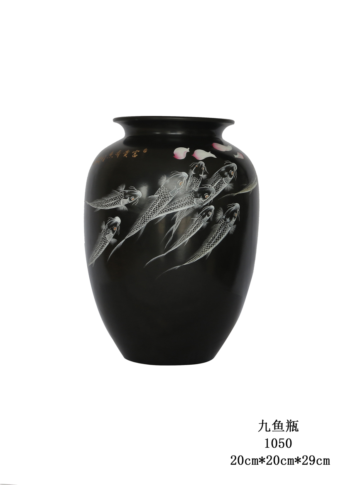

器物图录 / 001

实物图录 · 九鱼瓶 1050实物图录 · 九鱼瓶图 01
观察记录 / 002
器物档案 · 雄州九鱼瓶
游鱼，藏在陶面上
点下方的视图，从不同方向观察口沿、器腹和纹样带。
观察任务
拖动旋转，找一找鱼纹、短颈和圈足。转到俯视，比较器口与器腹的宽度。
九鱼瓶，图录1050，照片标注20×20×29厘米。依据正面实物照片重建；背面和内壁为推定。查看原始图录 ↗
下一站 / 从陶面纹样走向平面图形。